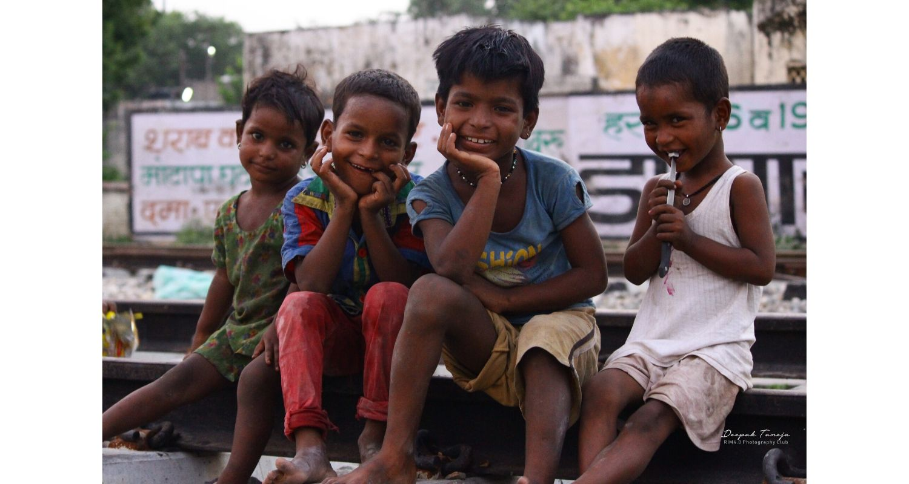

Portrait Photography
Portrait photography is one of the most popular genres of photography, with good reason. Good portrait photographers are able to capture the personality and emotion of people around them, along with earning money via wedding photography, senior portraits, family photography sessions, and so on. Below, you’ll find everything we’ve written about portrait photography, intended for both beginners and professionals. Also, if you want some ideas beyond our basic portrait photography tips, take a look at our more specialized tutorials on weddings and flash photography. Those articles will help you with posing, camera settings, and lighting portraits. It isn’t always easy to take pictures of people, but it’s worth the effort to learn.

This time around, I want to draw your attention to framing subjects with natural elements to create compelling images. For me personally, photographing is like narrating a story, so I often find it important to incorporate the surrounding elements of the scene along with my subjects. While you can certainly take fantastic photos isolating your subjects with creamy bokeh, I believe that decorating your shots with creative framing will help you add some substance and a pleasant visual appeal to enhance the story.
Do Location and Type of Photography Matter When Looking for Natural Frames?
The good news is, you do not have to be in a stunning location to be able to do this – at times, just a limb of a tree or a little corner of a bush will suffice. If you are not sure of what element(s) to incorporate in your shots, you can always blur the background out with a slightly visible natural frame that will caress the outer edges of the photograph. This alone can help add mystery to your story line, which the viewer can relate to or follow.
Photographing Through Elements to Create a Frame
Decorating photos with frames like this is pretty easy. If you see tree branches around with enough opening to squeeze through with your lens, give it a shot! Play around with this method a bit to understand how it affects your images. When framing shots like this, you might want to experiment with different focal lengths, apertures, camera to subject distance and framing, since you will get different looks.
Creating a Frame Within a Frame
Composing your shot so that you have a frame within a frame can also yield great results. You can create frames using doorways, windows, arches, mirrors and all kinds of other elements that can fit your subject(s). Such composition gives an an excellent opportunity to draw viewers’ attention to your subject(s), because it leads the eye in that particular direction. Using such framing elements also adds a sense of intrigue to images, making them appear much more interesting and engaging.

Street portraits
Trying to define street photography is almost like trying to define what sweet or salty is. You can’t fully describe it, but you know it when you see it.
Street photography is one of the most challenging but at the same time one of the most rewarding genres of photography. Documenting people in their everyday environment is not easy – it requires patience, hard work and sometimes even some bravery to be able to approach and photograph complete strangers. In this article, we will take a close look at what street photography is, how it differs from other genres of photography and provide some helpful tips to get you started.

A good street photo needs a clearly defined subject. All the rules (and I use that word loosely) of composition, such as rule of thirds, leading lines, use of negative space, symmetry, frames, etc. still hold. Try and tell a story with your images. Create photographs where the viewer pauses and asks questions.

Do Street Photos Need People?
Whether or not street shots need people in them is up for debate. Sticklers say that
all street photographs must contain people. However, I take a more laid back approach. While I believe that
street photographs do not need people, they do need the suggestion that someone was there.
For example, shadows can be used to capture thought-provoking shots, even if you can’t see the humans casting
them.
Is All Street Photography Candid?
Again, the sticklers out there will say “yes,” you must shoot street photography candidly.
A street portrait requires you to interact with your subject. Interacting with a stranger may strike fear into those just starting. However, I have met some fascinating people this way. I will talk more about getting over that fear in a bit.